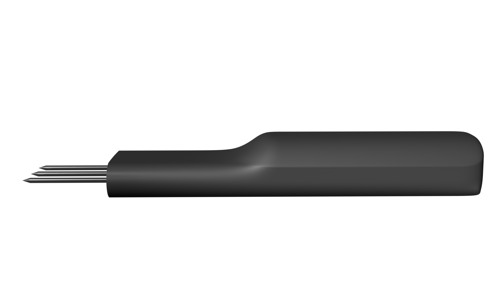

Our Products
At Grid Sphere, we offer innovative IoT-based solutions for agriculture, designed to enhance productivity and sustainability. Our products are designed to help farmers make informed decisions with real-time data and actionable insights. Explore our product range below.

On-Site NPK Tester
Accurate and reliable soil analysis for better crop management. Get real-time NPK readings at your fingertips and optimize your soil's fertility.
Learn MoreSmart Monitoring Station
Monitor your farm's environmental parameters with ease. Our station tracks key metrics such as temperature, humidity, soil moisture, and more.
Learn MoreAutomated Irrigation System
Save water and increase crop yield with automated irrigation. Our system adjusts water usage based on real-time data and weather conditions.
Learn More